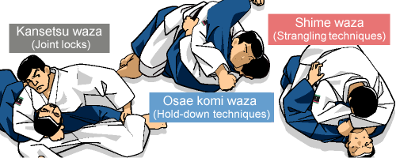

Podemos dividir todas as técnicas do Judô em 2 grandes grupos, sendo eles: Nage-Waza e Katame-Waza.
Dentro do grupo Nage-Waza temos 68 técnicas divididas em:
Te-waza (técnicas de braço, contendo 16 golpes)
Koshi-waza (técnicas de quadril, contendo 10 golpes)
Ashi-waza (técnicas de perna, contendo 21 golpes)
Ma-sutemi-waza (técnicas de sacrifício frontal, contendo 5 golpes)
Yoko-sutemi-waza (técnicas de sacrifício lateral, contendo 16 golpes)
Go Kyo no waza (contendo 5 séries que totalizam 40 golpes)
.gif.opdownload)
O segundo grupo, chamado Katame-Waza (técnicas de solo), é formado por 32 golpes, sendo dividido em:
Osaekomi-waza (Imobilizações, contendo 10 técnicas)
Shime-waza (Estrangulamentos, contendo 12 técnicas)
Kansetsu-waza (Torções, contendo 10 técnicas) 
Fonte do conteúdo